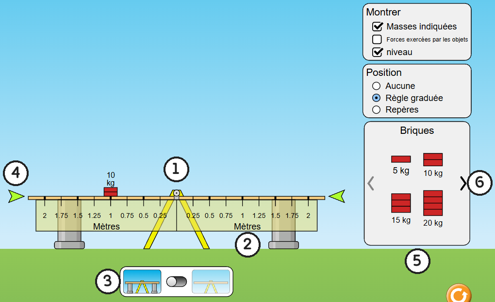
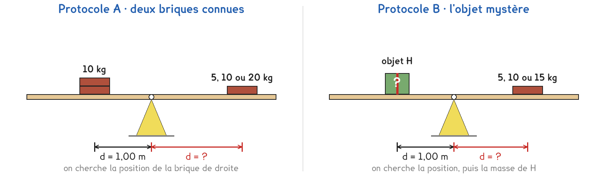
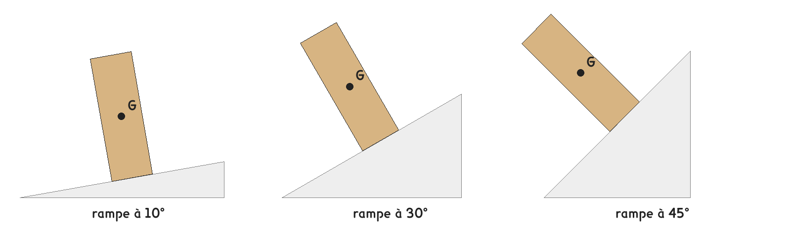

1re Bac Pro · MMCM · MVTR · OBM · TP sur simulation SIM-02
Où placer deux charges sur une bascule pour qu'elle reste à l'horizontale, et peut-on s'en servir pour peser un objet ?
3 figures
Sujet. Au parc, un père et sa fille s’assoient aux deux bouts d’une balançoire à bascule. Le père, bien plus lourd, reste collé au sol. Il avance vers le milieu : la bascule se met à l’horizontale.
Problématique : où placer deux charges sur une bascule pour qu’elle reste à l’horizontale, et peut-on s’en servir pour peser un objet ?
La simulation. « Équilibrer les masses », écran « Tester les équilibres », sur phet.colorado.edu. Une planche repose sur un pivot ; on y pose des briques et des objets. Sans réseau : la copie hors ligne, fichier phet/balancing-act_fr.html.

Capture de la simulation « Équilibrer les masses », PhET Interactive Simulations, University of Colorado Boulder, CC BY-NC 4.0.
a) Écrire dans chaque case le numéro de la figure qui correspond.
| le pivot : ……… | la règle graduée : ……… | l’interrupteur des supports : ……… |
|---|---|---|
| l’indicateur de niveau : ……… | les briques : ……… | la flèche ❯ des objets : ……… |
Le moment d’une force mesure sa capacité à faire tourner la planche autour du pivot : M = F × d, avec F en newtons et d, le bras de levier, la distance du pivot à la droite d’action de la force, en mètres. M est en newtons-mètres, N·m. On prend g = 9,8 N/kg.
b) Calculer le poids de chaque brique, puis le moment de celle de 10 kg.
| Brique | 5 kg | 10 kg | 15 kg | 20 kg |
|---|---|---|---|---|
| Poids P = m × g (N) | 49 | ……… | ……… | ……… |
Brique de 10 kg à 1,00 m du pivot : M = ……… × ……… = ……… N·m
Deux protocoles répondent à la même question. Une partie de la classe prend A, l’autre prend B, et on compare à la fin.

Protocole A · deux briques connues. Une brique de 10 kg reste à 1,00 m à gauche du pivot. On pose à droite une brique de 5, de 10 puis de 20 kg, et l’on cherche la position qui garde la planche horizontale, supports retirés.
Protocole B · l’objet mystère. L’objet H, de masse inconnue, reste à 1,00 m à gauche. On l’équilibre avec une brique de 5, de 10 puis de 15 kg posée à droite, et l’on relève la position trouvée. La masse de H se calcule ensuite.
c) Compléter le tableau pour comparer les deux protocoles.
| Protocole A | Protocole B | |
|---|---|---|
| Ce qui reste fixe à gauche | …………………………… | …………………………… |
| Ce qu’on cherche à droite | …………………………… | …………………………… |
| Toutes les masses sont connues | oui · non | oui · non |
Le choix se fait maintenant, avant de toucher à la simulation. Le professeur peut imposer l’un des deux protocoles pour équilibrer la classe.
d) Quel protocole prenez-vous ? Justifier en une phrase.
Je prends le protocole ……… parce que ……………………………………………………………………
Avant de chercher : on pose à droite une brique deux fois plus lourde.
e) La distance d’équilibre sera alors, entourer :
deux fois plus grande · la même · deux fois plus petite
Avant de commencer. Ouvrir l’écran « Tester les équilibres ». Dans « Position », cocher « Règle graduée ». Dans « Montrer », cocher « niveau » et laisser « Masses indiquées ». Les supports restent en place tant qu’on pose des objets.
f) Relever la position d’équilibre de chaque brique posée à droite, puis calculer.
| Essai | 1 | 2 | 3 |
|---|---|---|---|
| Masse de la brique de droite, m (kg) | |||
| Distance d’équilibre au pivot, d (m) | |||
| Poids de la brique, F = m × g (N) | |||
| Moment de la brique, M = F × d (N·m) |
Une consigne de schéma, pour l’essai 1.
g) Représenter la planche, le pivot et les trois forces qui s’exercent sur la planche à l’équilibre. Indiquer les deux bras de levier.
Le schéma se dessine sur la feuille du TP.
h) Comparer les trois moments du tableau entre eux, et en A à celui de b.
Le calcul suivant dépend du protocole : en A, prévoir la position d’une brique de 15 kg puis l’essayer ; en B, calculer la masse de l’objet H.
i) Écrire l’égalité des moments à l’équilibre, puis faire ce calcul.
Comparer avec un groupe qui a pris l’autre protocole.
j) L’hypothèse e est-elle confirmée ? Leur règle marche-t-elle chez vous ?
Au laboratoire, on fait la même chose avec une règle percée et des masses marquées.
k) Citer deux choses de ce montage que la simulation ne montre pas.
l) Répondre à la problématique en deux phrases.
Retour au parc. Le père pèse 80 kg, sa fille 20 kg, assise à 2,00 m du pivot. Sans calculer, entourer la distance au pivot où le père doit s’asseoir : 0,50 m · 1,00 m · 2,00 m · 8,00 m
Ce que ce TP a établi, et qui vaut pour tout solide qui tourne autour d’un axe :
À RETENIR
Le moment d’une force par rapport à un axe vaut M = F × d, en N·m, où d est le bras de levier : la distance de l’axe à la droite d’action de la force.
Un solide mobile autour d’un axe fixe est en équilibre quand la somme des moments est nulle : ceux qui le font tourner dans un sens compensent ceux de l’autre sens. Pour deux charges : F1 × d1 = F2 × d2. Une charge lourde près de l’axe équilibre une charge légère loin de l’axe.
Un carton haut de 60 cm et large de 20 cm est posé sur une rampe de plus en plus inclinée. Il ne glisse pas. Sur chaque dessin, tracer la verticale qui passe par son centre de gravité G, puis entourer les rampes où il bascule.

Quelle règle dit si un objet posé bascule ? ……………………………………………………………………
TP sur simulation de physique-chimie. Le travail se fait sur la feuille du TP : cette page en est la version à l'écran, sans les lignes à remplir. Rien n'est enregistré.